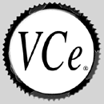

The Virtual Community Engine (VCe) is VA's flagship product, providing a complete content management system and web application development platform.
We have used VCe to develop and run many sites, including:
Douglas Mawson Institute of TAFE - www.dmit.sa.edu.au (using the new VCe2, XSL and Cocoon)
noise festival 2001 - www.noise2001.net.au (using the new VCe2, XSL and Cocoon)
Adelaide Fringe 2002 - archive2002.adelaidefringe.com.au (using the new VCe2, XSL and Cocoon)
LearnScope - the first three generations were built with VCe
Screenarts
You will find more info on the VCe at www.vce.net